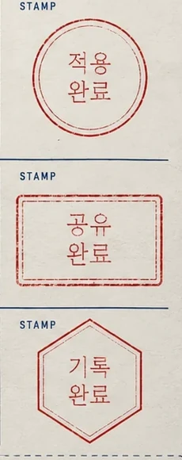
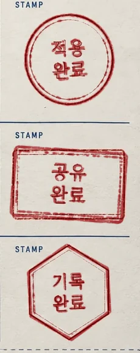
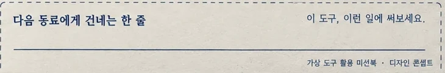
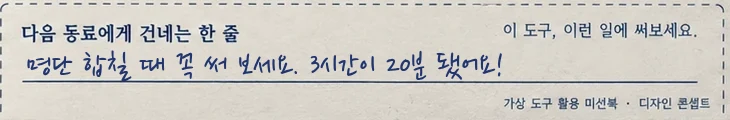
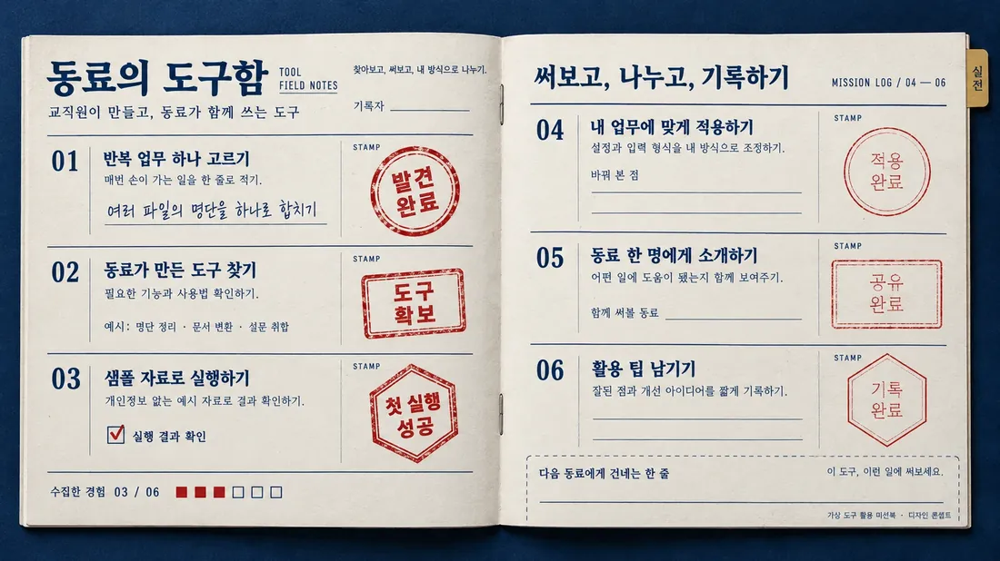

누르면 찍히는 도장
04·05·06 빈 도장 칸에 같은 모양의 잉크 도장을 만들어 얹었다. 누르면 살짝 크게 내려앉았다 자리 잡는다(다시 누르면 지워짐). 다음에 찍을 칸은 옅게 맥박친다.
Print ReferenceNo. 69
도장을 모으는 미션북. 빈 도장 칸을 누르면 꾹 찍히고, 진행 칸이 03/06에서 하나씩 찬다. 여섯 개를 다 모으면 마지막 줄 "다음 동료에게 건네는 한 줄"이 손글씨로 채워진다.
시리즈 · 업무도구 나눔#70발견 · 앱 장터 #68만들기 · 작업실 #69써 보기 · 미션북 #63고르기 · 자판기 #64알리기 · 포스터
03
명단 합칠 때 꼭 써 보세요. 3시간이 20분 됐어요!
원본 펼침면은 그대로 두고, 비어 있던 04~06 도장 칸을 누르면 찍히게 했다. 찍힌 도장은 원본의 빈 도장 윤곽을 굵게 번지게 만든 것이라 01~03 도장과 같은 손맛이 난다. 진행 숫자와 네모 칸이 함께 바뀐다. 가상 예시


04·05·06 빈 도장 칸에 같은 모양의 잉크 도장을 만들어 얹었다. 누르면 살짝 크게 내려앉았다 자리 잡는다(다시 누르면 지워짐). 다음에 찍을 칸은 옅게 맥박친다.


여섯 칸이 모두 차면 "다음 동료에게 건네는 한 줄"이 손글씨로 써진다. 미션의 끝이 다음 사람에게 넘기는 일로 이어진다.
손대지 않은 것두 쪽 펼침면, 01~03 도장과 손글씨, 남색 괘선, 오른쪽 "실전" 색인 탭은 원본 그대로. 진행 숫자 "03"만 지우고 살아 있는 글자로 바꿨다.

원본: 이미지 생성 AI로 만든 시안. 글자가 그림에 박혀 있다.
체크박스 대신 모양이 다른 도장(원·사각·육각). 완료가 "찍는 행동"이 된다.
연수 출석 카드, 독서 여권, 체험 부스 스탬프 투어
숫자와 네모 칸으로 남은 양을 보여 준다. 반쯤 찬 상태로 시작해 "이어서 하고 싶게".
단계형 과제, 연수 이수 현황
마지막 칸이 "다음 동료에게 건네는 한 줄". 기록이 공유로 이어진다.
후기 카드, 인수인계 메모
원칙 — 그림은 글자 없이 뽑고, 글자는 HTML·PPT로 얹는다. AI 그림 속 작은 한글은 거의 깨지고, 박힌 글자는 고칠 수 없다.
Top-down photo of an open A5 saddle-stitched mission booklet on a deep navy surface, 16:9. Cream paper, navy rules and serif numerals 01–06, mission titles on the left, a STAMP box on the right of each row. Rows 01–03 have bold red rubber stamps (circle, rectangle, hexagon); rows 04–06 show only thin red stamp outlines (not yet stamped). A progress row "03 / 06" with red squares at the bottom left, a dashed box at the bottom right. Small kraft index tab on the right edge. Soft daylight. Keep all small text minimal.
#E0DED471%#102D4D10%#07182B9%#BEB4B15%#77737B3%#96332F2%완성본에서 뽑은 주요 색과 화면 차지 비율.
u 단위(지면 폭 기준) 숫자를 바꾸면 됩니다.